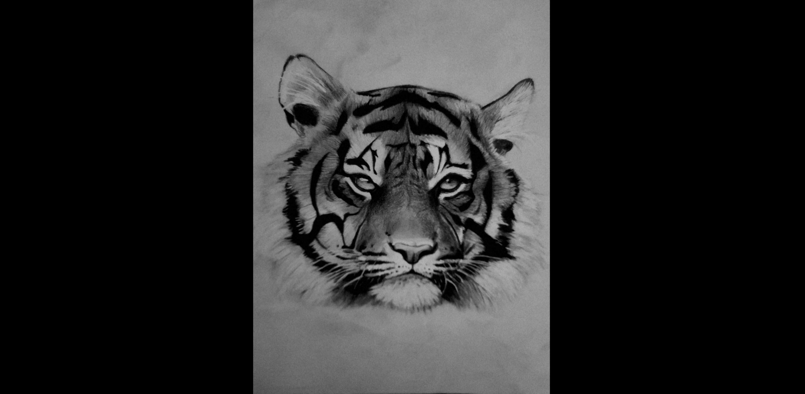

Model 3D
L'Ombre

Voici l’Ombre. C’est l’un des personnages que j’ai créés pour mon jeu d’horreur, qui était un projet d’équipe pour l’école. Je me suis inspiré de l’axolotl et je l’ai rendu un peu plus effrayant, puisqu’il s’agit du monstre principal du jeu. J’étais responsable de la conception du concept et de l’apparence de la créature, en visant à la rendre à la fois inquiétante et intrigante.
Date : 2024
Casque Dragon

J'ai réalisé ce projet en m'inspirant du film Le seigneur des anneaux en dessinant l'oeil au milieu. Je suis fière du résultat des motifs sur la partie dorée. J'ai travaillé le bump de cette partie à la main via maya ainsi que photoshop.
Date :2023
Masque CyberAqua

Ce projet marque ma première réalisation sur le logiciel Autodesk Maya. L’univers d’Ocearim se déroule dans une civilisation sous-marine issue d’anciens humains, les Ocearii, transformés il y a des siècles par la mystérieuse Pierre de Lune afin de survivre au Grand Déluge. Cette pierre sacrée confère des pouvoirs à la royauté et maintient l’équilibre technologique et vital de leur cité sous-marine, Ocearim.
lien youtube
Date :2023
Véhicule fictif

Cette moto s’inscrit dans le même univers que mon projet CyberAqua. Son design fusionne les formes organiques d’un bernard-l’ermite avec la mécanique futuriste d’une moto, explorant l’équilibre entre nature et technologie. Ce concept illustre ma recherche d’une esthétique biomécanique, où les éléments vivants et artificiels coexistent harmonieusement.
lien youtube
Date :2024
Mirage

Mirage est un personnage de dessin animé fictif qui sert d’antagoniste dans l’histoire, incarnant une énergie sombre puissante et mystérieuse. J’ai conçu et animé le personnage, puis rassemblé tous les éléments pour créer une composition de poster cohérente.
lien youtube
Date :2024
ChopStickCat
C'est un exercie que j'ai recréer a partir d'un tutoriel sur youtube J'ai manipuler la fonctionnalité Grease Pencil pour donner l'effet de dessin.
Date :2025
Jeu vidéo
L'Ombre

L’Ombre est un jeu de plateforme 3D d’horreur dans lequel vous incarnez R.E.D, un petit robot de maintenance envoyé en mission de dernier recours. À bord d’un vaisseau scientifique abandonné, la recherche a mal tourné et quelque chose de sombre rôde désormais dans les couloirs. Votre objectif : sauver ce qu’il reste de l’expérience et survivre à ce qui s’y cache.
Équipe: Peterson Germain et Laura Visentin
Lien : https://youtu.be/N9P01a59hgA
Date :2024
Sites Webs
Agence de Voyage

C'est un projet fait avec Wordpress, j'ai explorer les fonctions du customer https://gftnth00.mywhc.ca/4w4_27/
Date :2024
html/css/javascript
Wordpress
Le jeu du pendu

Le jeu du pendu principalement créer à partir de javascript https://giroma18.github.io/Jeu_Du_Pendu/
Date :2024
html/css/javascript
Projet finissants

Un exercice fait en classe, je me suis occupé de faire le site web et les animations https://giroma18.github.io/ProjetPhoto/
Date :2024
html/css
Affiches
Tigre

Fait à la main et inspiré d'une image
Date :2020
Le fol espoir

Une des affiche produit pour la revue le Fol Espoir. Une revue qui rejoue les oeuvres littéraire et cinématique des étudiants de maisonneuve.
Date :2020
Affiche de film fictif

C'est un affiche que j'ai fait en faisant plusieurs découpage et montage d'image
Date :2023
Illustrations d'animaux

L'illustration a été fait en m'inspirant de photo en utilisant principalement l'outil de plume.
Date :2023
Montages Vidéos
Vidéo Promotionnelle
Une vidéo fictive Promotionnelle pour annoncer un tournois de volleyball à Montréal.
Date :2024
À ne plus rejouer
Un jeu de société contenant trois règles simple.
Date :2023
Télé-Québec
Une vidéo fictive Promotionnelle pour Télé-Québec mettant en avant la thémathique des films de Science-fiction.
Date :2023